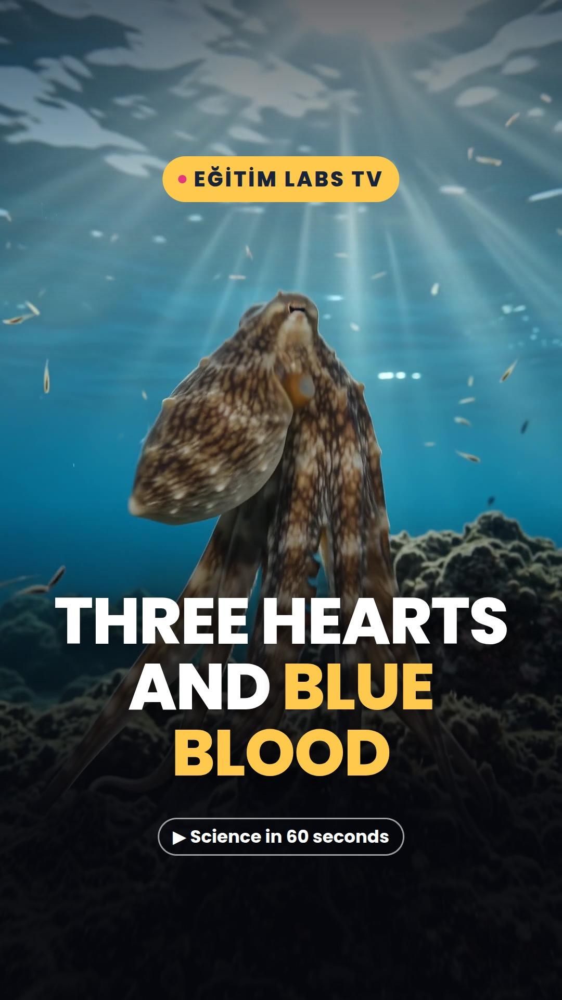

53.36 sn · 9:16 · ses: Gemini Algieba · Türkçe altyazı videoya gömülü
🐙 Three hearts, blue blood and arms that think for themselves. Meet the octopus. 👇 Üç kalp, mavi kan ve kendi kendine düşünen kollar. Karşınızda ahtapot. Follow @egitimlabs.official for more · Daha fazlası için takip et #Octopus #Ahtapot #DidYouKnow #Science #Nature #EğitimLabsTV
This Animal Has Three Hearts and Blue Blood 🐙 #shorts
